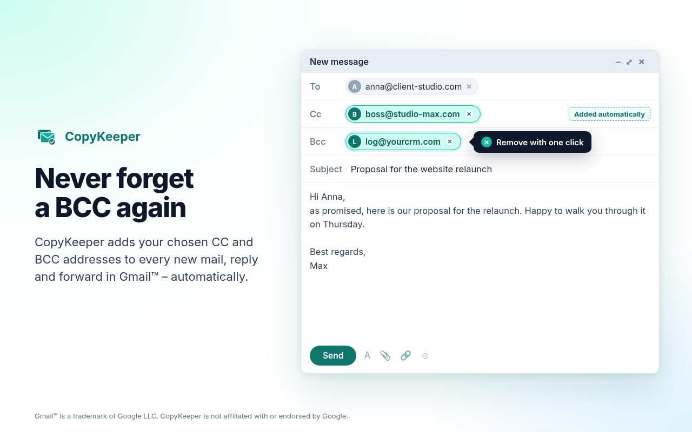
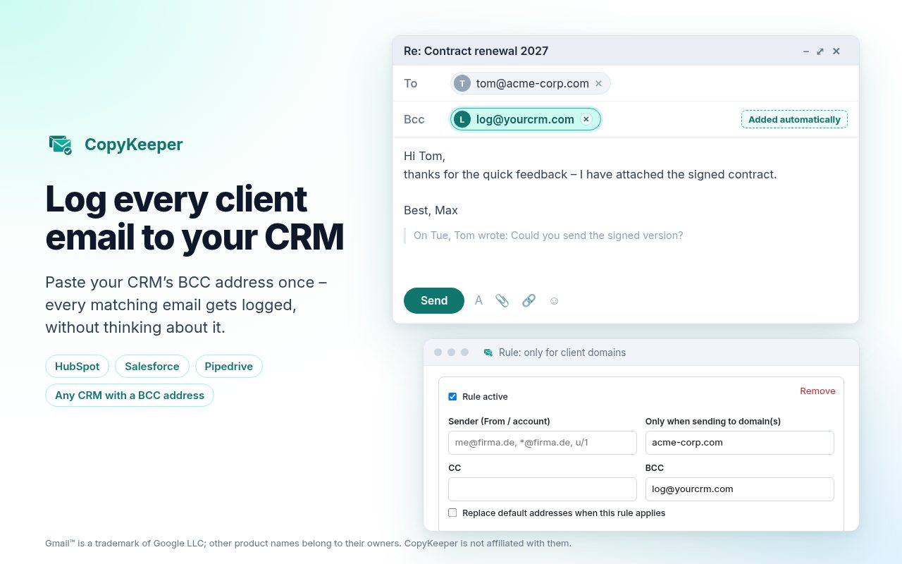

Never forget a BCC in Gmail™ again
CopyKeeper automatically adds your CC and BCC addresses to every new email, reply and forward. Perfect for logging client emails to your CRM. You see every address before you send.
Add to Chrome, it's freeNo account · No tracking · Data stays in your browser

CRM logging on autopilot
Paste your CRM's BCC address once (HubSpot, Salesforce, Pipedrive, Zoho and others). Every matching email gets logged.
Rules, not spam
Only for certain recipient domains or a specific sender alias. An exclusion list keeps internal and private mail out.
Visible and in your control
Addresses appear in the draft right away. Remove one with a click, no duplicates, on/off switch in the toolbar.
Free and private
All features free. No account, no Gmail API access, no servers, no network requests.
How it works
- Install CopyKeeper from the Chrome Web Store.
- Open the settings and enter your default CC/BCC addresses or create rules.
- Write emails in Gmail as usual. CopyKeeper fills in the rest.

FAQ
Does it work with Google Workspace accounts?
Yes, anywhere you use Gmail™ in Chrome on the desktop (mail.google.com).
Does it work in the Gmail mobile app?
No. Browser extensions only run in desktop Chrome. For server-side copies on all devices, a Google Workspace admin can set up an outbound routing rule.
Why not just use a Gmail filter?
Gmail filters only run on incoming mail, so they can't add a copy to the emails you send.
What data does CopyKeeper access?
Only the Gmail page it runs on, to fill in the CC/BCC fields. Settings are stored in Chrome's sync storage. Nothing is sent to us or anyone else. Details in the privacy policy.
Is it really free?
Yes. There is no paid version and no account. If it saves you time, a short rating in the Chrome Web Store helps a lot.
Something doesn't work?
Open the settings, run the self-test and send the debug log to mvepoint@gmail.com.